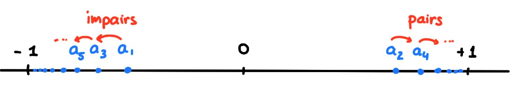

Supposons qu'à l'aide d'un crayon noir,
on place une infinité de points dans un
intervalle \([-C,C]\). Les points sont placés les uns après les autres,
et peuvent être choisis de façon tout à fait arbitraire.
On affirme qu'il existe nécessairement
un point de l'intervalle proche duquel vont s'accumuler une infinité de points
noirs.
En effet, on peut considérer les deux moitiés de l'intervalle, la gauche et la
droite. Puisqu'on place une infinité de points, au moins une des moitiés doit
contenir une infinité de points. Si on considère la moitié qui contient une
infinité de points, on peut à nouveau considérer sa moitié gauche et sa moitié
droite, et conclure qu'une de ces moitiés contient une infinité de points, etc.
On a ainsi, dans l'intervalle de départ,
des intervalles de tailles toujours plus petites,
contenant tous une infinité de points.
En termes plus précis, ce que cette anecdote tentait d'exprimer, c'est
que
d'une suite bornée, on peut toujours extraire une sous-suite convergente.
Soit \((a_n)_{n\geqslant 0}\) une suite, et \(0\leqslant
n_0\lt n_1\lt n_2\lt \dots\) une suite
d'entiers, strictement croissante.
Alors \((a_{n_k})_{k\geqslant 0}\) est une sous-suite de
\((a_n)_{n\geqslant 0}\).
Considérons la suite \((a_n)_{n\geqslant 0}\) définie par
\[
a_n=\sin(n\frac{\pi}{4})\,.
\]
Cette suite prend successivement les valeurs
\(0,\frac{\sqrt{2}}{2},1,-\frac{\sqrt{2}}{2},0,-\frac{\sqrt{2}}{2},-1,
\frac{\sqrt{2}}{2},0,\dots\).
Si on considère les
entiers \(n_1\lt n_2\lt\cdots\) définis par \(n_k=2k\), alors la sous-suite
\((a_{n_k})_{k\geqslant 0}\) est la suite \(0,1,0,-1,0,1,0,-1,\dots\)
Si on considère les
entiers \(n_1\lt n_2\lt\cdots\) définis par \(n_k=4k\), alors la sous-suite
\((a_{n_k})_{k\geqslant 0}\) est une suite constante puisque
\(a_{n_k}=a_{4k}=\sin(k\pi)=0\) pour tout \(k\).
(Théorème de Bolzano-Weierstrass)
De toute suite bornée \((a_n)_n\) on peut extraire une sous-suite convergente.
Plus précisément: Si \(|a_n|\leqslant C\) pour tout \(n\), alors
il existe \(L\in [-C,C]\) et
une sous-suite \((a_{n_k})_k\) telle que \(a_{n_k}\to L\).
Soit
\(L:= \limsup_{n\to \infty}x_n\), c'est-à-dire
\[L=\lim_{n\to \infty} M_n\,,\]
où \(M_n=\sup\{a_n,a_{n+1},\dots\}\).
Considérons une suite \((\varepsilon_j)_{j\geqslant 1}\) positive, tendant vers
zéro. (Pour fixer les idées, on peut choisir
\(\varepsilon_j:= \frac{1}{j}\).)
\(j=1\): Par définition de la limite, il existe \(n_1'\) tel
que
\[ L-\tfrac{\varepsilon_1}{2}\leqslant M_{n_1'}\leqslant L+\tfrac{\varepsilon_1}{2}\,.\]
Par définition du supremum, il existe \(n_1\geqslant n_1'\) tel que
\[ L-\varepsilon_1\leqslant a_{n_1}\leqslant L+\varepsilon_1\,.\]
\(j=2\): Par définition de la limite, il existe
\(n_2'\gt n_1\) tel que
\[ L-\tfrac{\varepsilon_2}{2}\leqslant M_{n_2'}\leqslant L+\tfrac{\varepsilon_2}{2}\,.\]
Par définition du supremum, il existe \(n_2\geqslant n_2'\) tel que
\[ L-\varepsilon_2\leqslant a_{n_2}\leqslant L+\varepsilon_2\,.\]
etc.
Ainsi, on a construit une suite \((n_k)\) strictement croissante telle que
pour tout \(k\),
\[
L-\varepsilon_k\leqslant a_{n_k}\leqslant L+\varepsilon_k\,.
\]
Ceci signifie bien que \(a_{n_k}\to L\).
Considérons la suite \(a_n=\sin(n)-2\cos(e^{3n}+e^{n^2})\). Puisque \(|a_n|\leqslant
3\), le théorème garantit l'existence d'un réel \(L\in [-3,3]\) et
d'une sous suite \((a_{n_k})_k\) telle que \(a_{n_k}\to L\) lorsque \(k\to
\infty\).
Dans ce dernier exemple, la valeur du réel \(L\), ainsi que la sous-suite,
peuvent être très difficile (voire impossible) à exprimer de manière explicite.
Voyons un exemple
simple dans lequel la sous-suite peut être donnée explicitement.
Considérons \(a_n=(-1)^n\frac{n}{n+1}\), qui est bornée puisque
\(|a_n|=\frac{n}{n+1}\leqslant 2\).
Cette suite ne converge pas, mais
le théorème garantit l'existence d'une sous-suite convergente.
Effectivement, pour cette suite, on voit que
Si on ne regarde que les indices
pairs, c'est-à-dire que l'on considère \(n_k=2k\), alors
on obtient la sous-suite \(a_{n_k}=a_{2k}=\frac{2k}{2k+1}\), qui converge vers
\(1\) lorsque \(k\to\infty\).
Si on ne regarde que les indices
impairs, c'est-à-dire que l'on considère \(n_k=2k+1\), alors
on obtient la sous-suite \(a_{n_k}=a_{2k+1}=-\frac{2k+1}{2k+2}\), qui converge
vers \(-1\) lorsque \(k\to \infty\).
Donc dans cet exemple, on peut extraire de la suite deux sous-suites
différentes, qui ont des limites différentes:

Finalement, remarquons que la
conclusion du théorème n'est évidemment plus vraie
si la suite n'est pas bornée:
La suite \(a_n=n\) n'est pas majorée, et on ne
peut pas en extraire une sous-suite convergente.
Vrai ou faux?
[ ] Si une suite est bornée, alors elle converge.
[ ] Si une suite n'est pas bornée, alors elle diverge.
[ ] Si toutes les sous-suites d'une suite sont bornées, alors cette
suite est bornée.
[ ] Si une suite possède une sous-suite bornée, alors elle est bornée.
[ ] Si une suite est minorée, alors elle possède une sous-suite
convergente.
[ ] Toute suite possède une sous-suite convergente.
[ ] Si une suite possède une sous-suite convergente, alors elle est
bornée.
[ ] Si une suite \(a_n\) est bornée, alors il existe un unique \(L\) et une
unique sous-suite \(a_{n_k}\) telle que \(a_{n_k}\to L\).